แปลหัวข้อย่อยตามต้นฉบับ ลำดับและหมายเลขตามข้อความในไฟล์ แม้ต้นฉบับใช้เลขหัวข้อซ้ำก็เก็บไว้เพื่อเทียบได้
แปลและเรียบเรียงหลักการ Single-bit error คือเปลี่ยนค่าหนึ่งบิต ส่วน Burst error มีความผิดพลาดกระจายอยู่ในช่วงหนึ่ง โดยความยาว burst นับจากบิตผิดแรกถึงบิตผิดสุดท้าย ไม่ได้แปลว่าทุกบิตระหว่างนั้นผิดทั้งหมด
Redundancy คือเพิ่มข้อมูลที่มีความสัมพันธ์กับข้อมูลจริง เพื่อให้ผู้รับตรวจหรือแก้ข้อผิดพลาดได้ Error detection บอกว่าพบความผิดปกติ ส่วน Error correction ต้องมีข้อมูลพอระบุค่าที่ถูกต้องหรืออาศัยการส่งซ้ำ การมี checksum ไม่ได้แปลว่าแก้ข้อมูลได้เอง
กลับสารบัญ ↑ Hamming distance และ Parity Hamming distance คือจำนวนตำแหน่งบิตที่ต่างกันระหว่าง codeword สองคำ ถ้าระยะต่ำสุดของโค้ดคือ dmin จะรับประกันตรวจได้ถึง dmin−1 บิตผิด และแก้ได้ถึง ⌊(dmin−1)/2⌋ บิต ตัวอย่าง dmin=3 ตรวจได้ 2 และแก้ได้ 1
Even parity เพิ่มบิตให้จำนวน 1 รวมเป็นเลขคู่ เช่นข้อมูล 1011001 มี 1 สี่ตัว จึงเพิ่ม 0 ถ้ามีบิตเปลี่ยนจำนวนคี่จะตรวจพบ แต่ถ้าเปลี่ยนจำนวนคู่บางรูปแบบจะไม่พบ Two-dimensional parity เพิ่มการตรวจตามแถวและคอลัมน์ ช่วยระบุตำแหน่งผิดหนึ่งบิตได้ตามโครงสร้าง
สำหรับ Hamming code แก้บิตผิดหนึ่งบิต จำนวน parity bits r ต้องพอให้ 2^r ≥ m+r+1 เมื่อข้อมูล m=4 ใช้ r=3 เพราะ 8≥8 แต่สมการนี้อย่างเดียวไม่ได้บอกตำแหน่ง parity ต้องวางตามรหัสที่ออกแบบ
กลับสารบัญ ↑ CRC แบบค่อยเป็นค่อยไป Cyclic Redundancy Check มองบิตเป็นพหุนามเหนือ GF(2) ใช้ XOR แทนการลบ ผู้ส่งเติมศูนย์ r บิตเมื่อ generator มี degree r แล้วหารเอาเศษ r บิตมาแทนท้ายข้อมูล ผู้รับหาร codeword ด้วย generator เดียวกัน หากเศษไม่เป็นศูนย์แสดงว่าตรวจพบข้อผิดพลาด
ตัวอย่าง D=1101, G=1011 ซึ่งมี degree 3: เติมศูนย์เป็น 1101000 แล้วหาร XOR ได้เศษ 001 จึงส่ง 1101001 เมื่อนำ 1101001 หารด้วย 1011 ได้เศษ 000 ให้ลองเขียนการหารทีละขั้นเพื่อเห็นว่าห้ามใช้การลบที่มีการยืมแบบเลขฐานสองทั่วไป
เศษศูนย์หมายถึง “ไม่ตรวจพบ” ไม่ใช่หลักฐานว่าไม่มีข้อผิดพลาดทุกชนิด ความสามารถตรวจขึ้นกับ generator และรูปแบบ error โค้ดที่ดีรับประกันบางกลุ่ม แต่ยังมี error pattern ที่เป็นพหุคูณ generator แล้วหลุดได้
กลับสารบัญ ↑ Internet checksum แบ่งข้อมูลเป็นคำ 16 บิต บวกแบบ one's complement โดยนำ carry สูงสุดวนกลับมาบวกด้านล่าง จากนั้นกลับบิตผลรวมเป็น checksum ผู้รับรวมข้อมูลกับ checksum ถ้าได้บิต 1 ทั้งหมดตามแบบจำลองถือว่าผ่านการตรวจ ไม่ใช่บวกธรรมดาแล้วทิ้ง carry
ลองตอบ: โค้ดที่ dmin=5 ตรวจและแก้ผิดได้เท่าไร เฉลยและเหตุผล: รับประกันตรวจได้สูงสุด 4 บิต และแก้ได้สูงสุด 2 บิต โดยสองข้อความนี้อธิบายความสามารถคนละโหมดการใช้งาน
ลองตอบ: CRC ผ่านแล้วรับประกันข้อมูลแท้จากผู้ส่งหรือไม่ เฉลยและเหตุผล: ไม่ CRC ตรวจความผิดพลาดจากสัญญาณตามแบบโค้ด ไม่ได้ยืนยันตัวตนหรือป้องกันผู้โจมตีแก้ข้อมูลแล้วคำนวณ CRC ใหม่
จำให้ได้: Parity / CRC / Checksum ใช้ตรวจผิด; แยกจากการยืนยันความถูกต้องเชิงความปลอดภัยด้วย MAC หรือลายเซ็น
กลับสารบัญ ↑ แปลหัวข้อย่อยตามต้นฉบับ ลำดับและหมายเลขตามข้อความในไฟล์ แม้ต้นฉบับใช้เลขหัวข้อซ้ำก็เก็บไว้เพื่อเทียบได้
แปลและเรียบเรียง Framing Data link control ต้องกำหนดขอบเขต frame ควบคุมการไหล และจัดการข้อผิดพลาด Character-oriented framing ใช้ byte พิเศษคั่นและทำ byte stuffing เมื่อข้อมูลมีค่าเหมือนตัวคั่น ส่วน Bit-oriented framing ใช้รูปแบบบิตคั่นและ bit stuffing เพื่อไม่ให้ข้อมูลปลอมเป็นขอบเขต
ตัวอย่างแนว HDLC ใช้ flag 01111110 ผู้ส่งแทรก 0 หลังเจอ 1 ติดต่อกันห้าบิตในเนื้อหาที่ต้องทำ stuffing ผู้รับตัด 0 ที่แทรกออกตามกติกา การเพิ่มบิตนี้ต่างจากการเพิ่มบิต parity เพราะจุดประสงค์คือรักษาขอบเขต ไม่ใช่สร้างโค้ดตรวจผิด
กลับสารบัญ ↑ Stop-and-Wait และ ARQ Stop-and-Wait ส่งหนึ่ง frame แล้วรอ ACK ก่อนส่งต่อ ARQ รวมการตรวจข้อผิดพลาด เลขลำดับ การตอบรับ และ timer เพื่อส่งซ้ำเมื่อจำเป็น เลขลำดับช่วยแยกข้อมูลใหม่กับข้อมูลเดิมที่ส่งซ้ำเมื่อ ACK หาย
ถ้า ACK หาย ผู้ส่ง timeout แล้วส่ง frame ซ้ำ ผู้รับต้องไม่ส่งข้อมูลซ้ำให้ชั้นบน แต่ยังตอบ ACK เพื่อให้ผู้ส่งเดินต่อได้ จึงต้องแยก “ได้รับ frame อีกครั้ง” กับ “ส่งมอบข้อมูลให้แอปอีกครั้ง”
ในแบบไม่คิดเวลาส่ง ACK และ processing การใช้ประโยชน์ผู้ส่ง U≈(L/R)/(RTT+L/R) ถ้า L/R=1 ms แต่ RTT=100 ms จะได้ U≈1/101≈0.99% แปลว่าแม้ลิงก์เร็วก็ว่างเกือบตลอดเพราะรอตอบรับ
กลับสารบัญ ↑ Sliding Window, Go-Back-N และ Selective Repeat Sliding window อนุญาตให้ส่งหลาย frame ค้างรอ ACK เพื่อเติมท่อข้อมูล Window ในตัวอย่างนี้นับ frame ต้องแยกจาก TCP window ที่มักนับ byte
ข้อจำกัดหน้าต่างป้องกันเลขลำดับวนกลับจนข้อมูลเก่าถูกเข้าใจเป็นข้อมูลใหม่ ตัวอย่าง SR มีเลข 0–7 ใช้ window ได้ไม่เกิน 4 ในแบบสมมาตร ไม่ใช่ 7 แบบ GBN
กลับสารบัญ ↑ HDLC และ PPP HDLC เป็นตัวอย่าง bit-oriented link protocol มีข้อมูล address, control และ FCS ส่วน PPP ใช้เชื่อม point-to-point มีการเจรจาลิงก์และการตั้งค่าที่เกี่ยวข้อง อย่าเหมารวมว่า data link ทุกเทคโนโลยีต้องรับประกันส่งถึงด้วยการส่งซ้ำ เช่น Ethernet พื้นฐานตรวจ frame แล้วอาจทิ้งโดยไม่ส่งซ้ำระดับลิงก์
ลองตอบ: ACK หายจำเป็นต้องแปลว่า data frame หายหรือไม่ เฉลยและเหตุผล: ไม่ ข้อมูลอาจถึงแล้วแต่ข้อความตอบรับหาย จึงต้องใช้ sequence number กรอง duplicate และตอบรับซ้ำได้
ลองตอบ: เลขลำดับ 4 บิตใช้ GBN และ SR ได้ window สูงสุดเท่าไร เฉลยและเหตุผล: GBN 15 ส่วน SR แบบหน้าต่างเท่ากัน 8 ต้องระบุสมมติฐานของโปรโตคอลด้วย
จำให้ได้: จำเหตุผลของ sequence number, timer, ACK และความต่าง GBN/SR มากกว่าท่องชื่อ
กลับสารบัญ ↑ ต้นฉบับสำหรับตรวจเทียบ เรียงตามหน้า PDF
1 2 3 4 5 6 7 8 9 10 11 12 13 14 15 16 17 18 19 20 21 22 23 24 25 26 27 28 29 30 31 หน้า 1 — บทที่ 7 การตรวจจับข้อผิดพลาด การควบคุม ดูภาพต้นฉบับหน้า 1 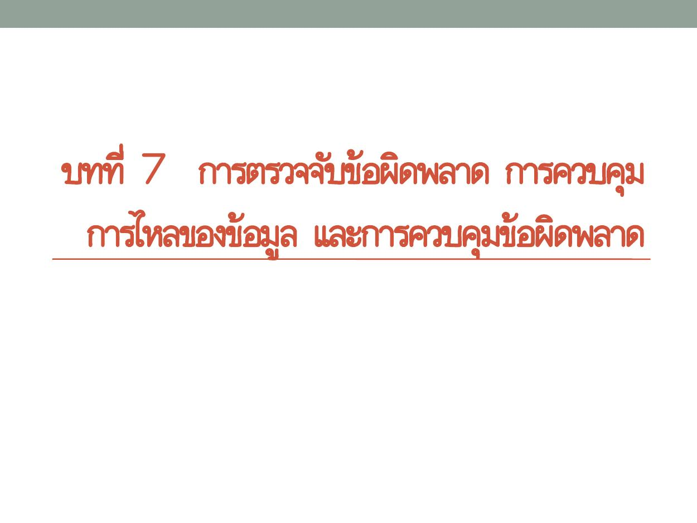
คลิกภาพเพื่อเปิดขยาย
อ่านข้อความต้นฉบับที่สกัดได้ (ไทย/อังกฤษตามไฟล์) บทที่ 7 การตรวจจับข้อผิดพลาด การควบคุม
การไหลของข้อมูล และการควบคุมข้อผิดพลาด ทบทวนภาษาไทย: การตรวจจับและแก้ไขข้อผิดพลาด Data Link Control และ Reliable Transfer
กลับสารบัญ ↑ หน้า 2 — บทนา ดูภาพต้นฉบับหน้า 2 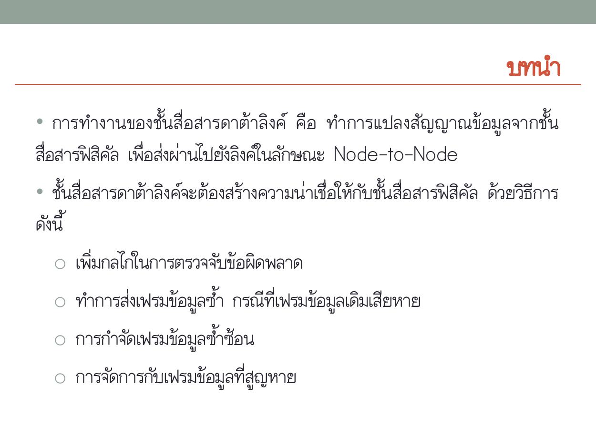
คลิกภาพเพื่อเปิดขยาย
อ่านข้อความต้นฉบับที่สกัดได้ (ไทย/อังกฤษตามไฟล์) บทนา
• การทางานของชั้นสื่อสารดาต้าลิงค์ คือ ทาการแปลงสัญญาณข้อมูลจากชั้น
สื่อสารฟิสิคัล เพื่อส่งผ่านไปยังลิงค์ในลักษณะ Node-to-Node
• ชั้นสื่อสารดาต้าลิงค์จะต้องสร้างความน่าเชื่อให้กับชั้นสื่อสารฟิสิคัล ด้วยวิธีการ
ดังนี้
o เพิ่มกลไกในการตรวจจับข้อผิดพลาด
o ทาการส่งเฟรมข้อมูลซ้า กรณีที่เฟรมข้อมูลเดิมเสียหาย
o การกาจัดเฟรมข้อมูลซ้าซ้อน
o การจัดการกับเฟรมข้อมูลที่สูญหาย ทบทวนภาษาไทย: การตรวจจับและแก้ไขข้อผิดพลาด Data Link Control และ Reliable Transfer
กลับสารบัญ ↑ หน้า 3 — ชนิดของข้อผิดพลาด (Type of Errors) ดูภาพต้นฉบับหน้า 3 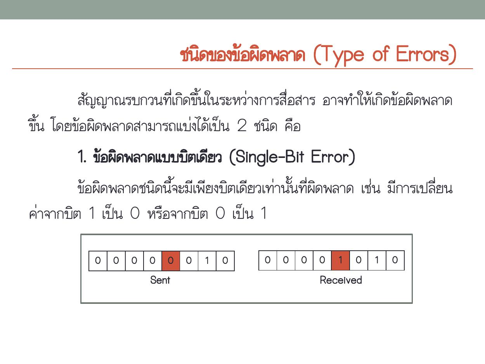
คลิกภาพเพื่อเปิดขยาย
อ่านข้อความต้นฉบับที่สกัดได้ (ไทย/อังกฤษตามไฟล์) ชนิดของข้อผิดพลาด (Type of Errors)
สัญญาณรบกวนที่เกิดขึน้ ในระหว่างการสื่อสาร อาจทาให้เกิดข้อผิดพลาด
ขึ้น โดยข้อผิดพลาดสามารถแบ่งได้เป็น 2 ชนิด คือ
1. ข้อผิดพลาดแบบบิตเดียว (Single-Bit Error)
ข้อผิดพลาดชนิดนี้จะมีเพียงบิตเดียวเท่านั้นที่ผดิ พลาด เช่น มีการเปลี่ยน
ค่าจากบิต 1 เป็น 0 หรือจากบิต 0 เป็น 1
0 0 0 0 0 0 1 0 0 0 0 0 1 0 1 0
Sent Received ทบทวนภาษาไทย: การตรวจจับและแก้ไขข้อผิดพลาด Data Link Control และ Reliable Transfer
กลับสารบัญ ↑ หน้า 4 — ชนิดของข้อผิดพลาด (Type of Errors) ดูภาพต้นฉบับหน้า 4 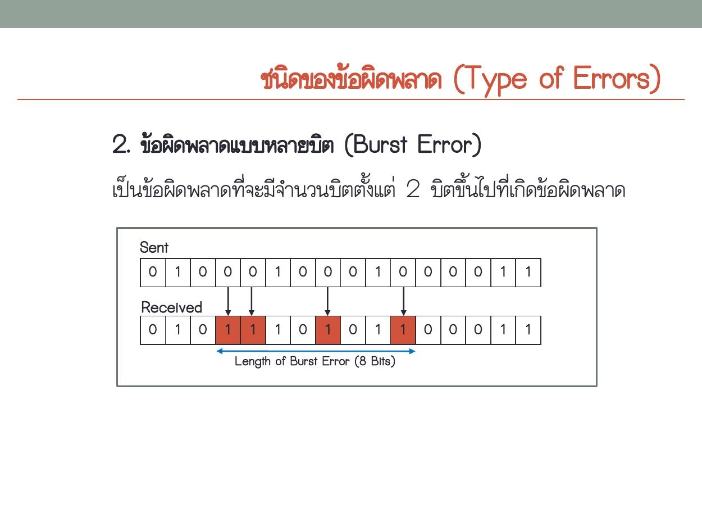
คลิกภาพเพื่อเปิดขยาย
อ่านข้อความต้นฉบับที่สกัดได้ (ไทย/อังกฤษตามไฟล์) ชนิดของข้อผิดพลาด (Type of Errors)
2. ข้อผิดพลาดแบบหลายบิต (Burst Error)
เป็นข้อผิดพลาดที่จะมีจานวนบิตตั้งแต่ 2 บิตขึ้นไปที่เกิดข้อผิดพลาด
Sent
0 1 0 0 0 1 0 0 0 1 0 0 0 0 1 1
Received
0 1 0 1 1 1 0 1 0 1 1 0 0 0 1 1
Length of Burst Error (8 Bits)
Sent ทบทวนภาษาไทย: การตรวจจับและแก้ไขข้อผิดพลาด Data Link Control และ Reliable Transfer
กลับสารบัญ ↑ หน้า 5 — วิธตี รวจจับข้อผิดพลาด (Error Detection Methods) ดูภาพต้นฉบับหน้า 5 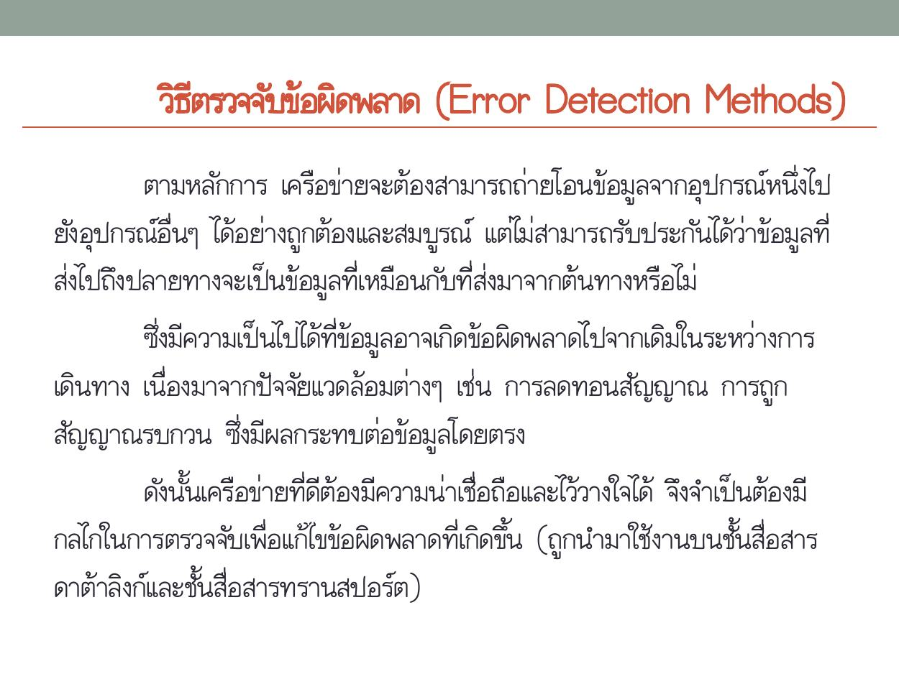
คลิกภาพเพื่อเปิดขยาย
อ่านข้อความต้นฉบับที่สกัดได้ (ไทย/อังกฤษตามไฟล์) วิธตี รวจจับข้อผิดพลาด (Error Detection Methods)
ตามหลักการ เครือข่ายจะต้องสามารถถ่ายโอนข้อมูลจากอุปกรณ์หนึ่งไป
ยังอุปกรณ์อื่นๆ ได้อย่างถูกต้องและสมบูรณ์ แต่ไม่สามารถรับประกันได้ว่าข้อมูลที่
ส่งไปถึงปลายทางจะเป็นข้อมูลที่เหมือนกับที่สง่ มาจากต้นทางหรือไม่
ซึ่งมีความเป็นไปได้ที่ข้อมูลอาจเกิดข้อผิดพลาดไปจากเดิมในระหว่างการ
เดินทาง เนื่องมาจากปัจจัยแวดล้อมต่างๆ เช่น การลดทอนสัญญาณ การถูก
สัญญาณรบกวน ซึ่งมีผลกระทบต่อข้อมูลโดยตรง
ดังนัน้ เครือข่ายที่ดีต้องมีความน่าเชื่อถือและไว้วางใจได้ จึงจาเป็นต้องมี
Sent
กลไกในการตรวจจับเพื่อแก้ไขข้อผิดพลาดที่เกิดขึน้ (ถูกนามาใช้งานบนชั้นสื่อสาร
ดาต้าลิงก์และชั้นสื่อสารทรานสปอร์ต) ทบทวนภาษาไทย: การตรวจจับและแก้ไขข้อผิดพลาด Data Link Control และ Reliable Transfer
กลับสารบัญ ↑ หน้า 6 — วิธตี รวจจับข้อผิดพลาด (Error Detection Methods) ดูภาพต้นฉบับหน้า 6 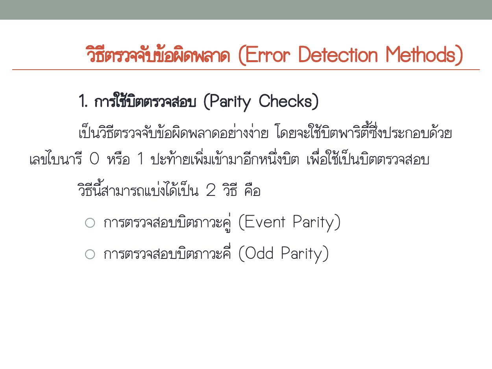
คลิกภาพเพื่อเปิดขยาย
อ่านข้อความต้นฉบับที่สกัดได้ (ไทย/อังกฤษตามไฟล์) วิธตี รวจจับข้อผิดพลาด (Error Detection Methods)
1. การใช้บติ ตรวจสอบ (Parity Checks)
เป็นวิธีตรวจจับข้อผิดพลาดอย่างง่าย โดยจะใช้บิตพาริตี้ซึ่งประกอบด้วย
เลขไบนารี 0 หรือ 1 ปะท้ายเพิ่มเข้ามาอีกหนึ่งบิต เพื่อใช้เป็นบิตตรวจสอบ
วิธีนี้สามารถแบ่งได้เป็น 2 วิธี คือ
o การตรวจสอบบิตภาวะคู่ (Event Parity)
o การตรวจสอบบิตภาวะคี่ (Odd Parity) ทบทวนภาษาไทย: การตรวจจับและแก้ไขข้อผิดพลาด Data Link Control และ Reliable Transfer
กลับสารบัญ ↑ หน้า 7 — วิธตี รวจจับข้อผิดพลาด (Error Detection Methods) ดูภาพต้นฉบับหน้า 7 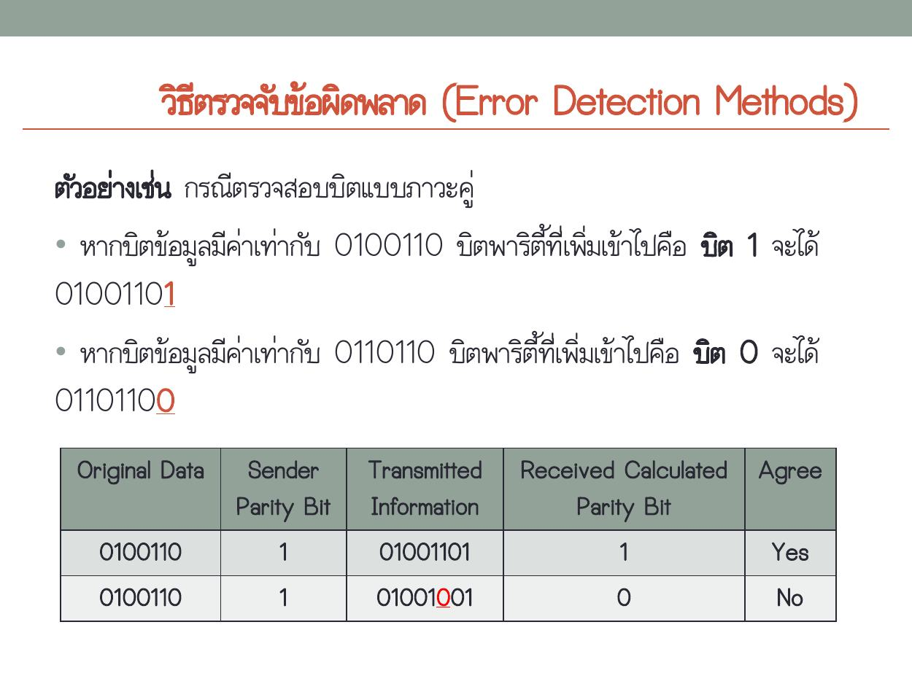
คลิกภาพเพื่อเปิดขยาย
อ่านข้อความต้นฉบับที่สกัดได้ (ไทย/อังกฤษตามไฟล์) วิธตี รวจจับข้อผิดพลาด (Error Detection Methods)
ตัวอย่างเช่น กรณีตรวจสอบบิตแบบภาวะคู่
• หากบิตข้อมูลมีค่าเท่ากับ 0100110 บิตพาริตี้ที่เพิ่มเข้าไปคือ บิต 1 จะได้
01001101
• หากบิตข้อมูลมีค่าเท่ากับ 0110110 บิตพาริตี้ที่เพิ่มเข้าไปคือ บิต 0 จะได้
01101100
Original Data Sender Transmitted Received Calculated Agree
Parity Bit Information Parity Bit
0100110 1 01001101 1 Yes
0100110 1 01001001 0 No ทบทวนภาษาไทย: การตรวจจับและแก้ไขข้อผิดพลาด Data Link Control และ Reliable Transfer
กลับสารบัญ ↑ หน้า 8 — วิธตี รวจจับข้อผิดพลาด (Error Detection Methods) ดูภาพต้นฉบับหน้า 8 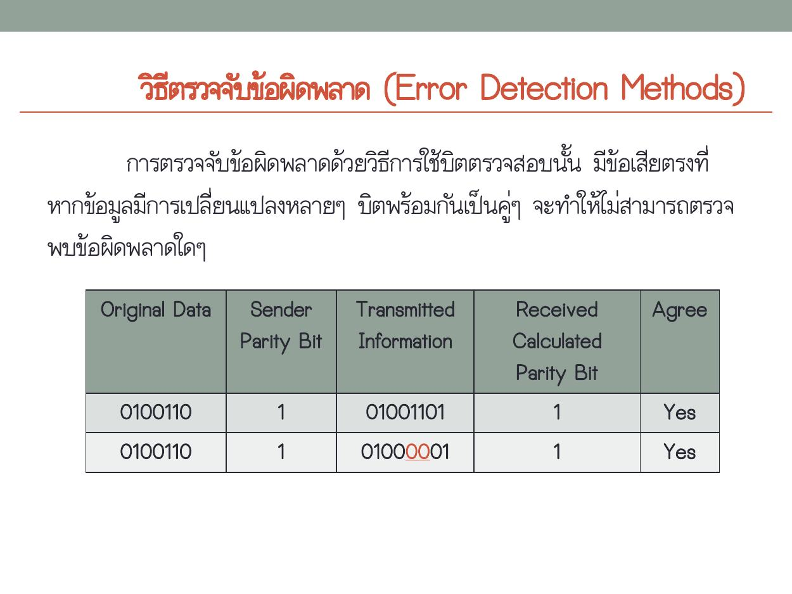
คลิกภาพเพื่อเปิดขยาย
อ่านข้อความต้นฉบับที่สกัดได้ (ไทย/อังกฤษตามไฟล์) วิธตี รวจจับข้อผิดพลาด (Error Detection Methods)
การตรวจจับข้อผิดพลาดด้วยวิธีการใช้บิตตรวจสอบนัน้ มีข้อเสียตรงที่
หากข้อมูลมีการเปลี่ยนแปลงหลายๆ บิตพร้อมกันเป็นคู่ๆ จะทาให้ไม่สามารถตรวจ
พบข้อผิดพลาดใดๆ
Original Data Sender Transmitted Received Agree
Parity Bit Information Calculated
Parity Bit
0100110 1 01001101 1 Yes
0100110 1 01000001 1 Yes ทบทวนภาษาไทย: การตรวจจับและแก้ไขข้อผิดพลาด Data Link Control และ Reliable Transfer
กลับสารบัญ ↑ หน้า 9 — วิธตี รวจจับข้อผิดพลาด (Error Detection Methods) ดูภาพต้นฉบับหน้า 9 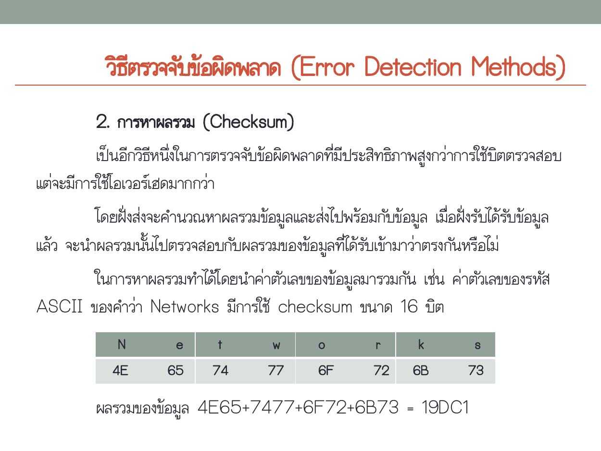
คลิกภาพเพื่อเปิดขยาย
อ่านข้อความต้นฉบับที่สกัดได้ (ไทย/อังกฤษตามไฟล์) วิธตี รวจจับข้อผิดพลาด (Error Detection Methods)
2. การหาผลรวม (Checksum)
เป็นอีกวิธีหนึ่งในการตรวจจับข้อผิดพลาดที่มีประสิทธิภาพสูงกว่าการใช้บิตตรวจสอบ
แต่จะมีการใช้โอเวอร์เฮดมากกว่า
โดยฝั่งส่งจะคานวณหาผลรวมข้อมูลและส่งไปพร้อมกับข้อมูล เมื่อฝั่งรับได้รับข้อมูล
แล้ว จะนาผลรวมนั้นไปตรวจสอบกับผลรวมของข้อมูลที่ได้รับเข้ามาว่าตรงกันหรือไม่
ในการหาผลรวมทาได้โดยนาค่าตัวเลขของข้อมูลมารวมกัน เช่น ค่าตัวเลขของรหัส
ASCII ของคาว่า Networks มีการใช้ checksum ขนาด 16 บิต
N e t w o r k s
4E 65 74 77 6F 72 6B 73
ผลรวมของข้อมูล 4E65+7477+6F72+6B73 = 19DC1 ทบทวนภาษาไทย: การตรวจจับและแก้ไขข้อผิดพลาด Data Link Control และ Reliable Transfer
กลับสารบัญ ↑ หน้า 10 — วิธตี รวจจับข้อผิดพลาด (Error Detection Methods) ดูภาพต้นฉบับหน้า 10 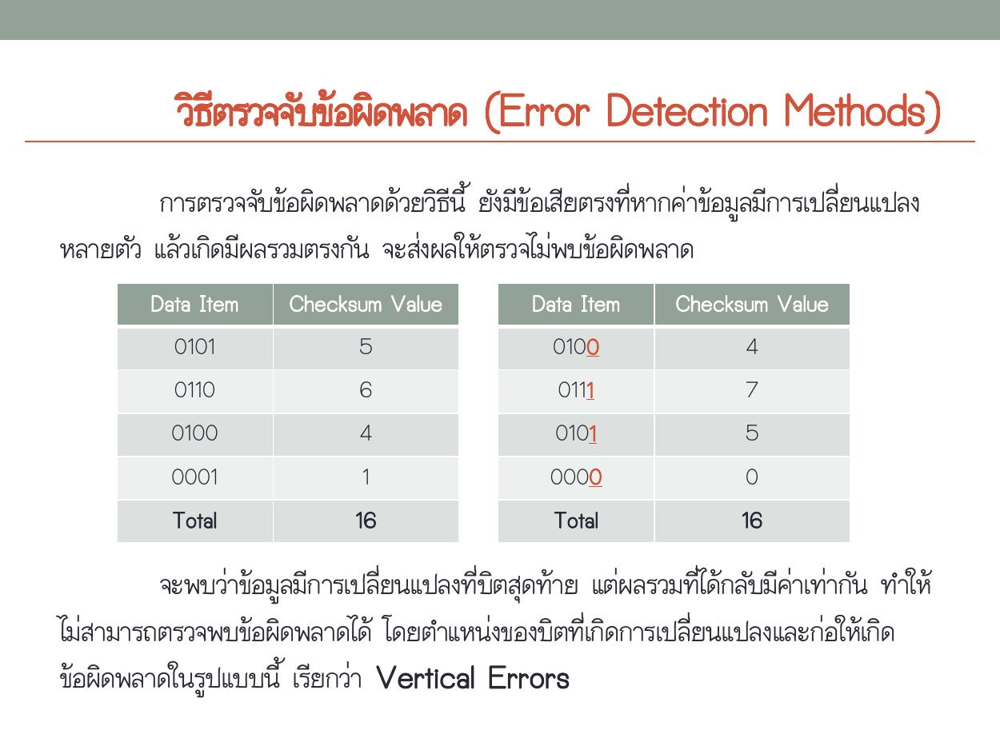
คลิกภาพเพื่อเปิดขยาย
อ่านข้อความต้นฉบับที่สกัดได้ (ไทย/อังกฤษตามไฟล์) วิธตี รวจจับข้อผิดพลาด (Error Detection Methods)
การตรวจจับข้อผิดพลาดด้วยวิธีนี้ ยังมีข้อเสียตรงที่หากค่าข้อมูลมีการเปลี่ยนแปลง
หลายตัว แล้วเกิดมีผลรวมตรงกัน จะส่งผลให้ตรวจไม่พบข้อผิดพลาด
Data Item Checksum Value Data Item Checksum Value
0101 5 0100 4
0110 6 0111 7
0100 4 0101 5
0001 1 0000 0
Total 16 Total 16
จะพบว่าข้อมูลมีการเปลี่ยนแปลงที่บิตสุดท้าย แต่ผลรวมที่ได้กลับมีค่าเท่ากัน ทาให้
ไม่สามารถตรวจพบข้อผิดพลาดได้ โดยตาแหน่งของบิตที่เกิดการเปลี่ยนแปลงและก่อให้เกิด
ข้อผิดพลาดในรูปแบบนี้ เรียกว่า Vertical Errors ทบทวนภาษาไทย: การตรวจจับและแก้ไขข้อผิดพลาด Data Link Control และ Reliable Transfer
กลับสารบัญ ↑ หน้า 11 — การควบคุมการไหลของข้อมูล (Flow Control) ดูภาพต้นฉบับหน้า 11 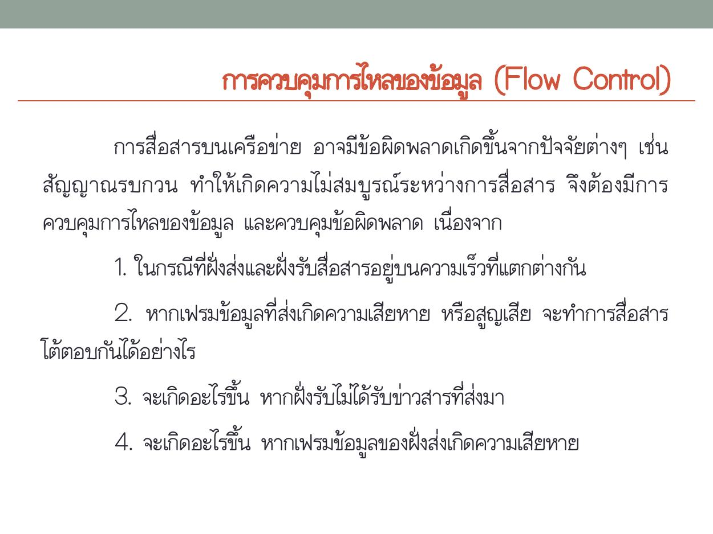
คลิกภาพเพื่อเปิดขยาย
อ่านข้อความต้นฉบับที่สกัดได้ (ไทย/อังกฤษตามไฟล์) การควบคุมการไหลของข้อมูล (Flow Control)
การสื่อสารบนเครือข่าย อาจมีข้อผิดพลาดเกิดขึ้นจากปัจจัยต่างๆ เช่น
สั ญ ญาณรบกวน ท าให้ เ กิ ด ความไม่ ส มบู ร ณ์ ร ะหว่ า งการสื่ อ สาร จึ ง ต้ อ งมี ก าร
ควบคุมการไหลของข้อมูล และควบคุมข้อผิดพลาด เนื่องจาก
1. ในกรณีที่ฝั่งส่งและฝั่งรับสื่อสารอยู่บนความเร็วที่แตกต่างกัน
2. หากเฟรมข้อมูลที่ส่งเกิดความเสียหาย หรือสูญเสีย จะทาการสื่อสาร
โต้ตอบกันได้อย่างไร
3. จะเกิดอะไรขึ้น หากฝั่งรับไม่ได้รับข่าวสารที่ส่งมา
4. จะเกิดอะไรขึ้น หากเฟรมข้อมูลของฝั่งส่งเกิดความเสียหาย ทบทวนภาษาไทย: การตรวจจับและแก้ไขข้อผิดพลาด Data Link Control และ Reliable Transfer
กลับสารบัญ ↑ หน้า 12 — การควบคุมการไหลของข้อมูล (Flow Control) ดูภาพต้นฉบับหน้า 12 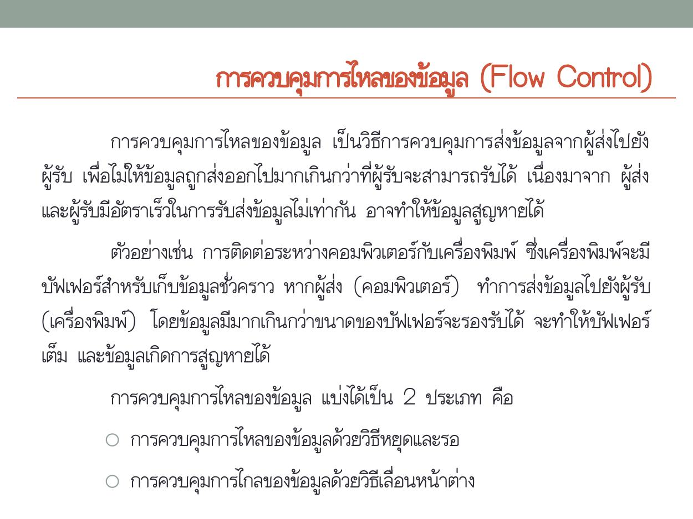
คลิกภาพเพื่อเปิดขยาย
อ่านข้อความต้นฉบับที่สกัดได้ (ไทย/อังกฤษตามไฟล์) การควบคุมการไหลของข้อมูล (Flow Control)
การควบคุมการไหลของข้อมูล เป็นวิธีการควบคุมการส่งข้อมูลจากผู้ส่งไปยัง
ผู้รับ เพื่อไม่ให้ข้อมูลถูกส่งออกไปมากเกินกว่าที่ผู้รับจะสามารถรับได้ เนื่องมาจาก ผู้ส่ง
และผู้รับมีอัตราเร็วในการรับส่งข้อมูลไม่เท่ากัน อาจทาให้ข้อมูลสูญหายได้
ตัวอย่างเช่น การติดต่อระหว่างคอมพิวเตอร์กับเครื่องพิมพ์ ซึ่งเครื่องพิมพ์จะมี
บัฟเฟอร์สาหรับเก็บข้อมูลชั่วคราว หากผู้ส่ง (คอมพิวเตอร์) ทาการส่งข้อมูลไปยังผู้รับ
(เครื่องพิมพ์) โดยข้อมูลมีมากเกินกว่าขนาดของบัฟเฟอร์จะรองรับได้ จะทาให้บัฟเฟอร์
เต็ม และข้อมูลเกิดการสูญหายได้
การควบคุมการไหลของข้อมูล แบ่งได้เป็น 2 ประเภท คือ
o การควบคุมการไหลของข้อมูลด้วยวิธีหยุดและรอ
o การควบคุมการไกลของข้อมูลด้วยวิธีเลื่อนหน้าต่าง ทบทวนภาษาไทย: การตรวจจับและแก้ไขข้อผิดพลาด Data Link Control และ Reliable Transfer
กลับสารบัญ ↑ หน้า 13 — การควบคุมการไหลของข้อมูล (Flow Control) ดูภาพต้นฉบับหน้า 13 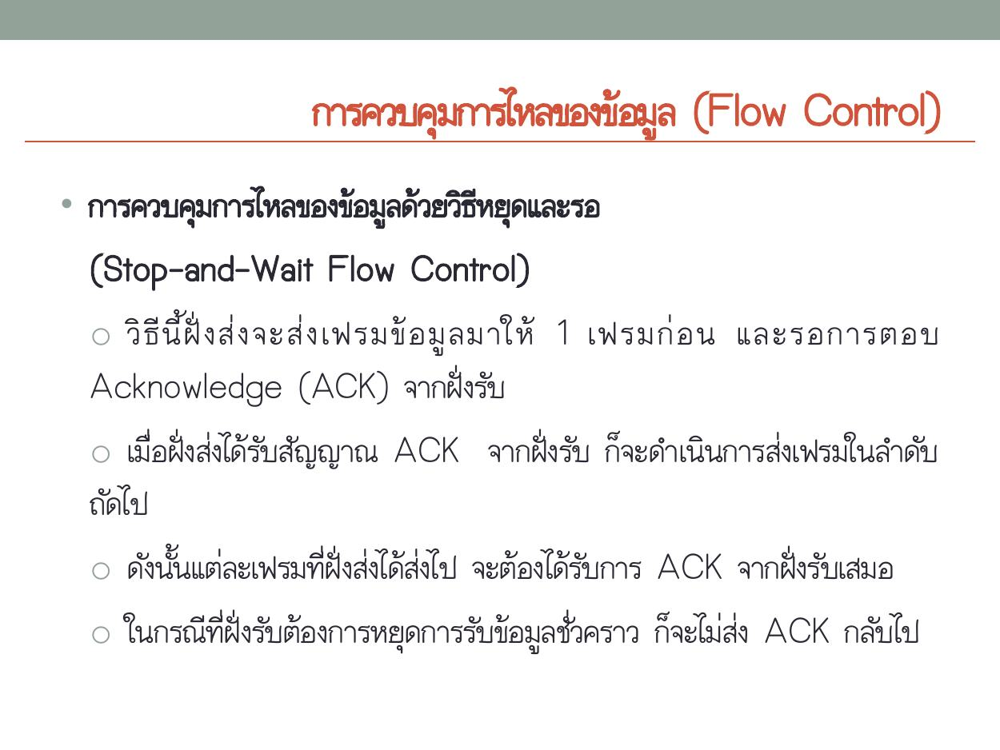
คลิกภาพเพื่อเปิดขยาย
อ่านข้อความต้นฉบับที่สกัดได้ (ไทย/อังกฤษตามไฟล์) การควบคุมการไหลของข้อมูล (Flow Control)
• การควบคุมการไหลของข้อมูลด้วยวิธีหยุดและรอ
(Stop-and-Wait Flow Control)
o วิ ธี นี้ ฝั่ ง ส่ ง จะส่ ง เฟรมข้ อ มู ล มาให้ 1 เฟรมก่ อ น และรอการตอบ
Acknowledge (ACK) จากฝั่งรับ
o เมื่อฝั่งส่งได้รับสัญญาณ ACK จากฝั่งรับ ก็จะดาเนินการส่งเฟรมในลาดับ
ถัดไป
o ดังนั้นแต่ละเฟรมที่ฝั่งส่งได้ส่งไป จะต้องได้รับการ ACK จากฝั่งรับเสมอ
o ในกรณีที่ฝั่งรับต้องการหยุดการรับข้อมูลชั่วคราว ก็จะไม่ส่ง ACK กลับไป ทบทวนภาษาไทย: การตรวจจับและแก้ไขข้อผิดพลาด Data Link Control และ Reliable Transfer
กลับสารบัญ ↑ หน้า 14 — การควบคุมการไหลของข้อมูล (Flow Control) ดูภาพต้นฉบับหน้า 14 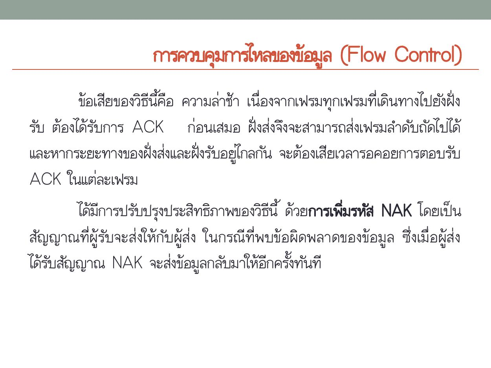
คลิกภาพเพื่อเปิดขยาย
อ่านข้อความต้นฉบับที่สกัดได้ (ไทย/อังกฤษตามไฟล์) การควบคุมการไหลของข้อมูล (Flow Control)
ข้อเสียของวิธีนี้คือ ความล่าช้า เนื่องจากเฟรมทุกเฟรมที่เดินทางไปยังฝั่ง
รับ ต้องได้รับการ ACK ก่อนเสมอ ฝั่งส่งจึงจะสามารถส่งเฟรมลาดับถัดไปได้
และหากระยะทางของฝั่งส่งและฝั่งรับอยู่ไกลกัน จะต้องเสียเวลารอคอยการตอบรับ
ACK ในแต่ละเฟรม
ได้มีการปรับปรุงประสิทธิภาพของวิธีนี้ ด้วยการเพิ่มรหัส NAK โดยเป็น
สัญญาณที่ผู้รับจะส่งให้กับผู้ส่ง ในกรณีที่พบข้อผิดพลาดของข้อมูล ซึ่งเมื่อผู้ส่ง
ได้รับสัญญาณ NAK จะส่งข้อมูลกลับมาให้อีกครั้งทันที ทบทวนภาษาไทย: การตรวจจับและแก้ไขข้อผิดพลาด Data Link Control และ Reliable Transfer
กลับสารบัญ ↑ หน้า 15 — การควบคุมการไหลของข้อมูล (Flow Control) ดูภาพต้นฉบับหน้า 15 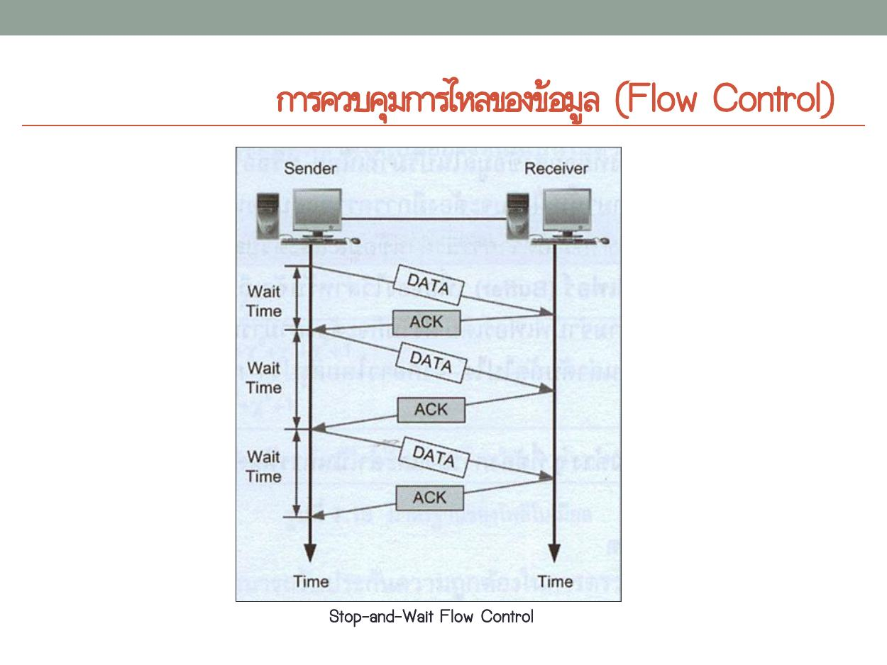
คลิกภาพเพื่อเปิดขยาย
อ่านข้อความต้นฉบับที่สกัดได้ (ไทย/อังกฤษตามไฟล์) การควบคุมการไหลของข้อมูล (Flow Control)
Stop-and-Wait Flow Control ทบทวนภาษาไทย: การตรวจจับและแก้ไขข้อผิดพลาด Data Link Control และ Reliable Transfer
กลับสารบัญ ↑ หน้า 16 — การควบคุมการไหลของข้อมูล (Flow Control) ดูภาพต้นฉบับหน้า 16 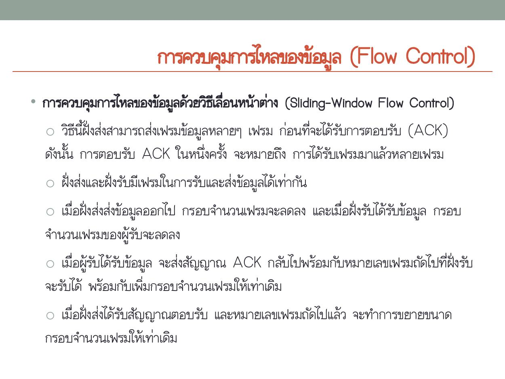
คลิกภาพเพื่อเปิดขยาย
อ่านข้อความต้นฉบับที่สกัดได้ (ไทย/อังกฤษตามไฟล์) การควบคุมการไหลของข้อมูล (Flow Control)
• การควบคุมการไหลของข้อมูลด้วยวิธเี ลือ่ นหน้าต่าง (Sliding-Window Flow Control)
o วิธีนี้ฝั่งส่งสามารถส่งเฟรมข้อมูลหลายๆ เฟรม ก่อนที่จะได้รับการตอบรับ (ACK)
ดังนั้น การตอบรับ ACK ในหนึ่งครั้ง จะหมายถึง การได้รับเฟรมมาแล้วหลายเฟรม
o ฝั่งส่งและฝั่งรับมีเฟรมในการรับและส่งข้อมูลได้เท่ากัน
o เมื่อฝั่งส่งส่งข้อมูลออกไป กรอบจานวนเฟรมจะลดลง และเมื่อฝั่งรับได้รับข้อมูล กรอบ
จานวนเฟรมของผู้รับจะลดลง
o เมื่อผู้รับได้รับข้อมูล จะส่งสัญญาณ ACK กลับไปพร้อมกับหมายเลขเฟรมถัดไปที่ฝั่งรับ
จะรับได้ พร้อมกับเพิ่มกรอบจานวนเฟรมให้เท่าเดิม
o เมื่อฝั่งส่งได้รับสัญญาณตอบรับ และหมายเลขเฟรมถัดไปแล้ว จะทาการขยายขนาด
กรอบจานวนเฟรมให้เท่าเดิม ทบทวนภาษาไทย: การตรวจจับและแก้ไขข้อผิดพลาด Data Link Control และ Reliable Transfer
กลับสารบัญ ↑ หน้า 17 — การควบคุมการไหลของข้อมูล (Flow Control) ดูภาพต้นฉบับหน้า 17 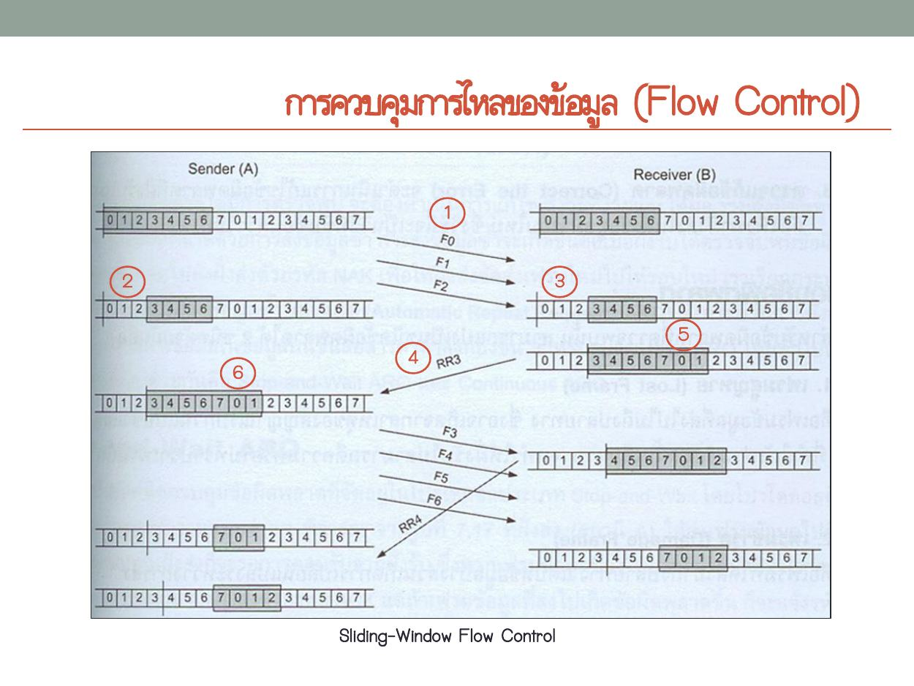
คลิกภาพเพื่อเปิดขยาย
อ่านข้อความต้นฉบับที่สกัดได้ (ไทย/อังกฤษตามไฟล์) การควบคุมการไหลของข้อมูล (Flow Control)
1
2 3
5
4
6
Sliding-Window Flow Control ทบทวนภาษาไทย: การตรวจจับและแก้ไขข้อผิดพลาด Data Link Control และ Reliable Transfer
กลับสารบัญ ↑ หน้า 18 — การควบคุมข้อผิดพลาด (Error Control) ดูภาพต้นฉบับหน้า 18 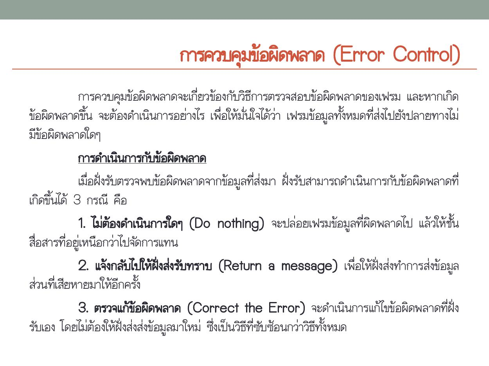
คลิกภาพเพื่อเปิดขยาย
อ่านข้อความต้นฉบับที่สกัดได้ (ไทย/อังกฤษตามไฟล์) การควบคุมข้อผิดพลาด (Error Control)
การควบคุมข้อผิดพลาดจะเกี่ยวข้องกับวิธีการตรวจสอบข้อผิดพลาดของเฟรม และหากเกิด
ข้อผิดพลาดขึ้น จะต้องดาเนินการอย่างไร เพื่อให้มั่นใจได้ว่า เฟรมข้อมูลทั้งหมดที่ส่งไปยังปลายทางไม่
มีข้อผิดพลาดใดๆ
การดาเนินการกับข้อผิดพลาด
เมื่อฝั่งรับตรวจพบข้อผิดพลาดจากข้อมูลที่ส่งมา ฝั่งรับสามารถดาเนินการกับข้อผิดพลาดที่
เกิดขึ้นได้ 3 กรณี คือ
1. ไม่ต้องดาเนินการใดๆ (Do nothing) จะปล่อยเฟรมข้อมูลที่ผิดพลาดไป แล้วให้ชั้น
สื่อสารที่อยู่เหนือกว่าไปจัดการแทน
2. แจ้งกลับไปให้ฝั่งส่งรับทราบ (Return a message) เพื่อให้ฝั่งส่งทาการส่งข้อมูล
ส่วนที่เสียหายมาให้อีกครั้ง
3. ตรวจแก้ข้อผิดพลาด (Correct the Error) จะดาเนินการแก้ไขข้อผิดพลาดที่ฝั่ง
รับเอง โดยไม่ต้องให้ฝั่งส่งส่งข้อมูลมาใหม่ ซึ่งเป็นวิธีที่ซับซ้อนกว่าวิธีทั้งหมด ทบทวนภาษาไทย: การตรวจจับและแก้ไขข้อผิดพลาด Data Link Control และ Reliable Transfer
กลับสารบัญ ↑ หน้า 19 — การควบคุมข้อผิดพลาด (Error Control) ดูภาพต้นฉบับหน้า 19 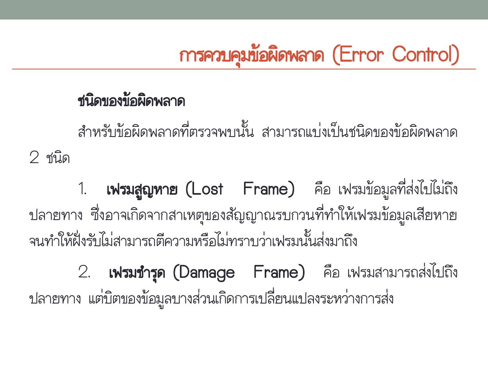
คลิกภาพเพื่อเปิดขยาย
อ่านข้อความต้นฉบับที่สกัดได้ (ไทย/อังกฤษตามไฟล์) การควบคุมข้อผิดพลาด (Error Control)
ชนิดของข้อผิดพลาด
สาหรับข้อผิดพลาดที่ตรวจพบนั้น สามารถแบ่งเป็นชนิดของข้อผิดพลาด
2 ชนิด
1. เฟรมสูญหาย (Lost Frame) คือ เฟรมข้อมูลที่ส่งไปไม่ถึง
ปลายทาง ซึ่งอาจเกิดจากสาเหตุของสัญญาณรบกวนที่ทาให้เฟรมข้อมูลเสียหาย
จนทาให้ฝั่งรับไม่สามารถตีความหรือไม่ทราบว่าเฟรมนั้นส่งมาถึง
2. เฟรมชารุด (Damage Frame) คือ เฟรมสามารถส่งไปถึง
ปลายทาง แต่บิตของข้อมูลบางส่วนเกิดการเปลี่ยนแปลงระหว่างการส่ง ทบทวนภาษาไทย: การตรวจจับและแก้ไขข้อผิดพลาด Data Link Control และ Reliable Transfer
กลับสารบัญ ↑ หน้า 20 — การควบคุมข้อผิดพลาด (Error Control) ดูภาพต้นฉบับหน้า 20 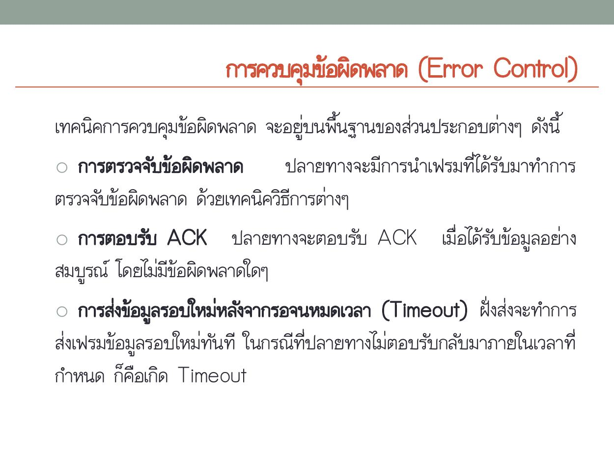
คลิกภาพเพื่อเปิดขยาย
อ่านข้อความต้นฉบับที่สกัดได้ (ไทย/อังกฤษตามไฟล์) การควบคุมข้อผิดพลาด (Error Control)
เทคนิคการควบคุมข้อผิดพลาด จะอยู่บนพื้นฐานของส่วนประกอบต่างๆ ดังนี้
o การตรวจจับข้อผิดพลาด ปลายทางจะมีการนาเฟรมที่ได้รับมาทาการ
ตรวจจับข้อผิดพลาด ด้วยเทคนิควิธีการต่างๆ
o การตอบรับ ACK ปลายทางจะตอบรับ ACK เมื่อได้รับข้อมูลอย่าง
สมบูรณ์ โดยไม่มีข้อผิดพลาดใดๆ
o การส่งข้อมูลรอบใหม่หลังจากรอจนหมดเวลา (Timeout) ฝั่งส่งจะทาการ
ส่งเฟรมข้อมูลรอบใหม่ทันที ในกรณีที่ปลายทางไม่ตอบรับกลับมาภายในเวลาที่
กาหนด ก็คือเกิด Timeout ทบทวนภาษาไทย: การตรวจจับและแก้ไขข้อผิดพลาด Data Link Control และ Reliable Transfer
กลับสารบัญ ↑ หน้า 21 — การควบคุมข้อผิดพลาด (Error Control) ดูภาพต้นฉบับหน้า 21 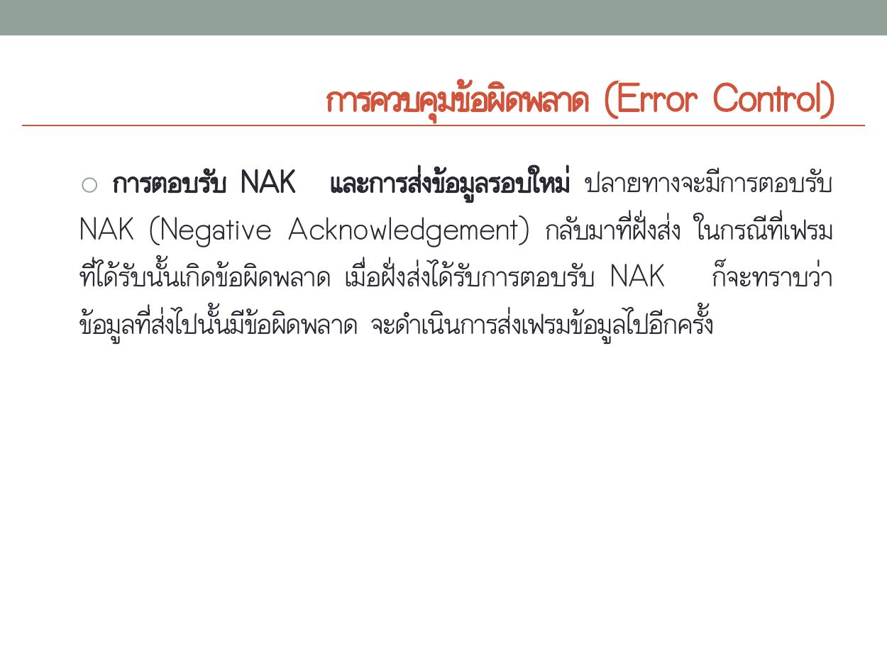
คลิกภาพเพื่อเปิดขยาย
อ่านข้อความต้นฉบับที่สกัดได้ (ไทย/อังกฤษตามไฟล์) การควบคุมข้อผิดพลาด (Error Control)
o การตอบรับ NAK และการส่งข้อมูลรอบใหม่ ปลายทางจะมีการตอบรับ
NAK (Negative Acknowledgement) กลับมาที่ฝั่งส่ง ในกรณีที่เฟรม
ที่ได้รับนั้นเกิดข้อผิดพลาด เมื่อฝั่งส่งได้รับการตอบรับ NAK ก็จะทราบว่า
ข้อมูลที่ส่งไปนั้นมีข้อผิดพลาด จะดาเนินการส่งเฟรมข้อมูลไปอีกครั้ง ทบทวนภาษาไทย: การตรวจจับและแก้ไขข้อผิดพลาด Data Link Control และ Reliable Transfer
กลับสารบัญ ↑ หน้า 22 — การแก้ไขข้อผิดพลาดโดยการส่งข้อมูลซ้า ดูภาพต้นฉบับหน้า 22 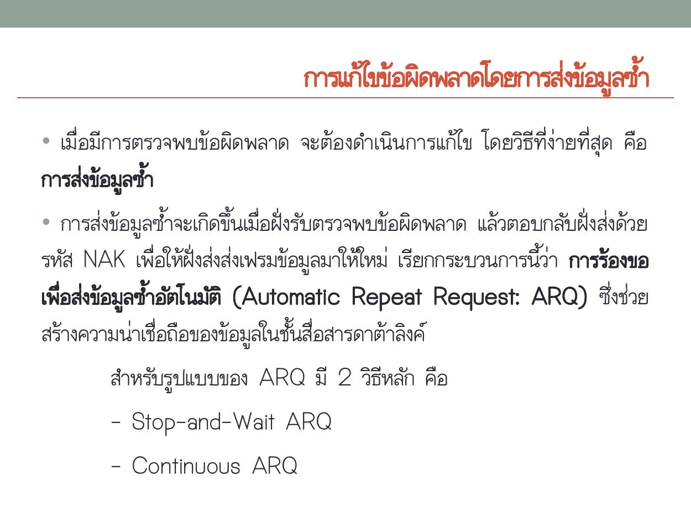
คลิกภาพเพื่อเปิดขยาย
อ่านข้อความต้นฉบับที่สกัดได้ (ไทย/อังกฤษตามไฟล์) การแก้ไขข้อผิดพลาดโดยการส่งข้อมูลซ้า
• เมื่อมีการตรวจพบข้อผิดพลาด จะต้องดาเนินการแก้ไข โดยวิธีที่ง่ายที่สุด คือ
การส่งข้อมูลซ้า
• การส่งข้อมูลซ้าจะเกิดขึ้นเมื่อฝั่งรับตรวจพบข้อผิดพลาด แล้วตอบกลับฝั่งส่งด้วย
รหัส NAK เพื่อให้ฝั่งส่งส่งเฟรมข้อมูลมาให้ใหม่ เรียกกระบวนการนี้ว่า การร้องขอ
เพื่อส่งข้อมูลซ้าอัตโนมัติ (Automatic Repeat Request: ARQ) ซึ่งช่วย
สร้างความน่าเชื่อถือของข้อมูลในชั้นสื่อสารดาต้าลิงค์
สาหรับรูปแบบของ ARQ มี 2 วิธีหลัก คือ
- Stop-and-Wait ARQ
- Continuous ARQ ทบทวนภาษาไทย: การตรวจจับและแก้ไขข้อผิดพลาด Data Link Control และ Reliable Transfer
กลับสารบัญ ↑ หน้า 23 — Stop-and-Wait ARQ ดูภาพต้นฉบับหน้า 23 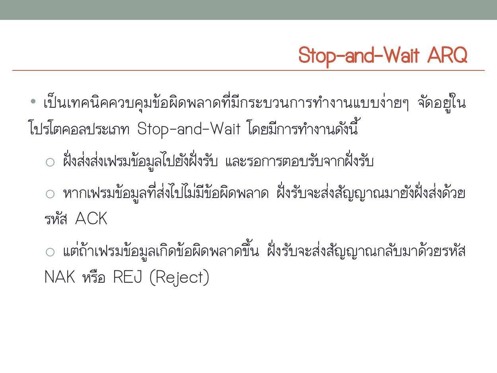
คลิกภาพเพื่อเปิดขยาย
อ่านข้อความต้นฉบับที่สกัดได้ (ไทย/อังกฤษตามไฟล์) Stop-and-Wait ARQ
• เป็ น เทคนิ ค ควบคุ ม ข้ อ ผิ ด พลาดที่ มี ก ระบวนการท างานแบบง่ า ยๆ จั ด อยู่ ใ น
โปรโตคอลประเภท Stop-and-Wait โดยมีการทางานดังนี้
o ฝั่งส่งส่งเฟรมข้อมูลไปยังฝั่งรับ และรอการตอบรับจากฝั่งรับ
o หากเฟรมข้อมูลที่ส่งไปไม่มีข้อผิดพลาด ฝั่งรับจะส่งสัญญาณมายังฝั่งส่งด้วย
รหัส ACK
o แต่ถ้าเฟรมข้อมูลเกิดข้อผิดพลาดขึ้น ฝั่งรับจะส่งสัญญาณกลับมาด้วยรหัส
NAK หรือ REJ (Reject) ทบทวนภาษาไทย: การตรวจจับและแก้ไขข้อผิดพลาด Data Link Control และ Reliable Transfer
กลับสารบัญ ↑ หน้า 24 — Stop-and-Wait ARQ ดูภาพต้นฉบับหน้า 24 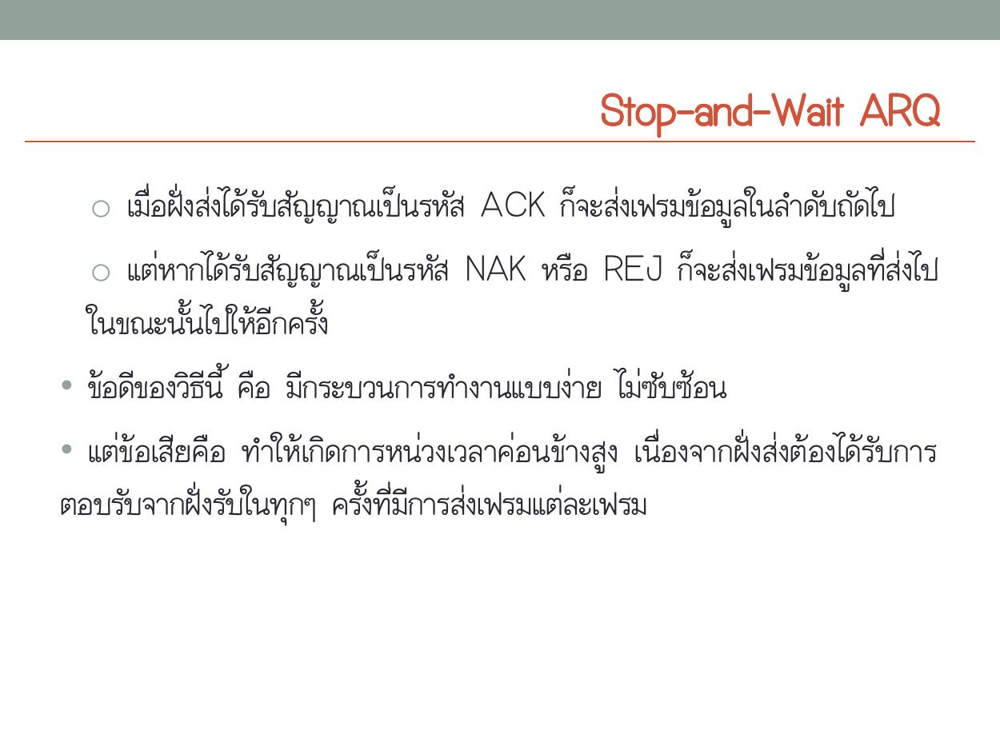
คลิกภาพเพื่อเปิดขยาย
อ่านข้อความต้นฉบับที่สกัดได้ (ไทย/อังกฤษตามไฟล์) Stop-and-Wait ARQ
o เมื่อฝั่งส่งได้รับสัญญาณเป็นรหัส ACK ก็จะส่งเฟรมข้อมูลในลาดับถัดไป
o แต่หากได้รับสัญญาณเป็นรหัส NAK หรือ REJ ก็จะส่งเฟรมข้อมูลที่ส่งไป
ในขณะนั้นไปให้อีกครั้ง
• ข้อดีของวิธีนี้ คือ มีกระบวนการทางานแบบง่าย ไม่ซับซ้อน
• แต่ข้อเสียคือ ทาให้เกิดการหน่วงเวลาค่อนข้างสูง เนื่องจากฝั่งส่งต้องได้รับการ
ตอบรับจากฝั่งรับในทุกๆ ครั้งที่มีการส่งเฟรมแต่ละเฟรม ทบทวนภาษาไทย: การตรวจจับและแก้ไขข้อผิดพลาด Data Link Control และ Reliable Transfer
กลับสารบัญ ↑ หน้า 25 — Stop-and-Wait ARQ ดูภาพต้นฉบับหน้า 25 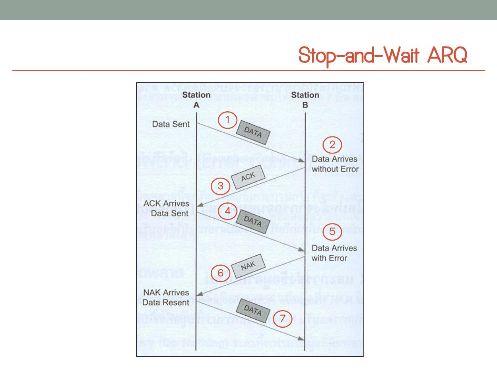
คลิกภาพเพื่อเปิดขยาย
อ่านข้อความต้นฉบับที่สกัดได้ (ไทย/อังกฤษตามไฟล์) Stop-and-Wait ARQ
1
2
3
4
5
6
7 ทบทวนภาษาไทย: การตรวจจับและแก้ไขข้อผิดพลาด Data Link Control และ Reliable Transfer
กลับสารบัญ ↑ หน้า 26 — Continuous ARQ ดูภาพต้นฉบับหน้า 26 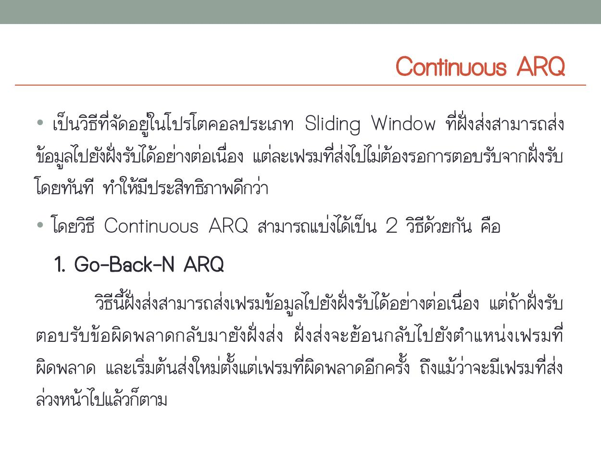
คลิกภาพเพื่อเปิดขยาย
อ่านข้อความต้นฉบับที่สกัดได้ (ไทย/อังกฤษตามไฟล์) Continuous ARQ
• เป็นวิธีที่จัดอยู่ในโปรโตคอลประเภท Sliding Window ที่ฝั่งส่งสามารถส่ง
ข้อมูลไปยังฝั่งรับได้อย่างต่อเนื่อง แต่ละเฟรมที่ส่งไปไม่ต้องรอการตอบรับจากฝั่งรับ
โดยทันที ทาให้มีประสิทธิภาพดีกว่า
• โดยวิธี Continuous ARQ สามารถแบ่งได้เป็น 2 วิธีด้วยกัน คือ
1. Go-Back-N ARQ
วิธีนี้ฝั่งส่งสามารถส่งเฟรมข้อมูลไปยังฝั่งรับได้อย่างต่อเนื่อง แต่ถ้าฝั่งรับ
ตอบรั บ ข้ อ ผิ ด พลาดกลั บ มายั ง ฝั่ ง ส่ ง ฝั่ ง ส่ ง จะย้ อ นกลั บ ไปยั ง ต าแหน่ ง เฟรมที่
ผิดพลาด และเริ่มต้นส่งใหม่ตั้งแต่เฟรมที่ผิดพลาดอีกครั้ง ถึงแม้ว่าจะมีเฟรมที่ส่ง
ล่วงหน้าไปแล้วก็ตาม ทบทวนภาษาไทย: การตรวจจับและแก้ไขข้อผิดพลาด Data Link Control และ Reliable Transfer
กลับสารบัญ ↑ หน้า 27 — Go-Back-N ARQ ดูภาพต้นฉบับหน้า 27 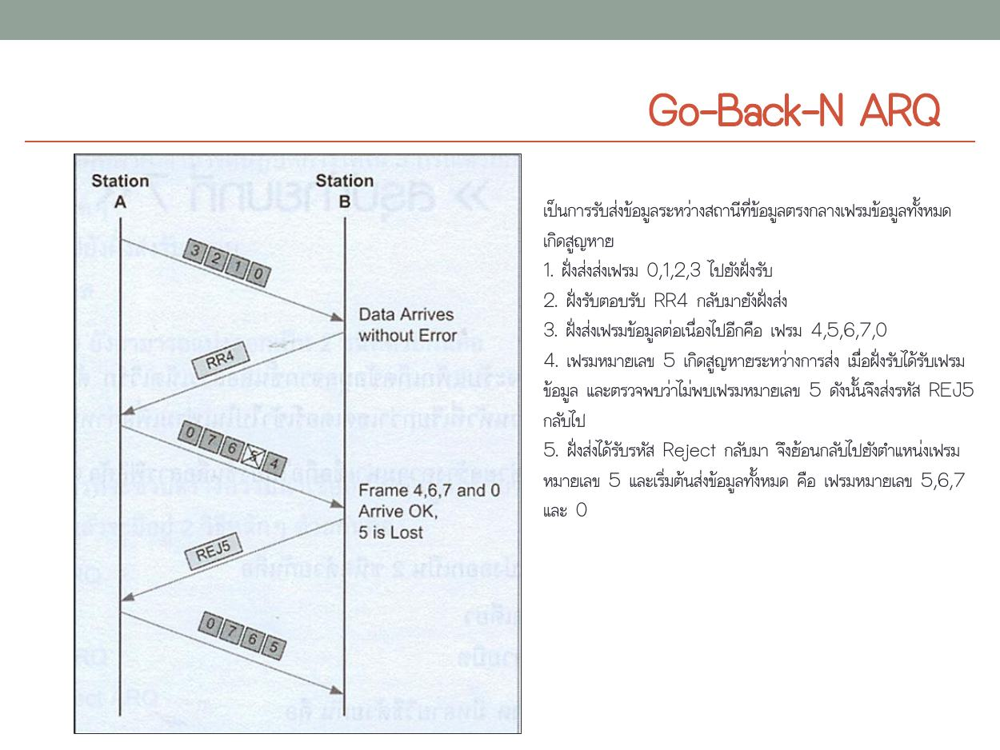
คลิกภาพเพื่อเปิดขยาย
อ่านข้อความต้นฉบับที่สกัดได้ (ไทย/อังกฤษตามไฟล์) Go-Back-N ARQ
เป็นการรับส่งข้อมูลระหว่างสถานีที่ข้อมูลตรงกลางเฟรมข้อมูลทั้งหมด
เกิดสูญหาย
1. ฝั่งส่งส่งเฟรม 0,1,2,3 ไปยังฝั่งรับ
2. ฝั่งรับตอบรับ RR4 กลับมายังฝั่งส่ง
3. ฝั่งส่งเฟรมข้อมูลต่อเนื่องไปอีกคือ เฟรม 4,5,6,7,0
4. เฟรมหมายเลข 5 เกิดสูญหายระหว่างการส่ง เมื่อฝั่งรับได้รับเฟรม
ข้อมูล และตรวจพบว่าไม่พบเฟรมหมายเลข 5 ดังนั้นจึงส่งรหัส REJ5
กลับไป
5. ฝั่งส่งได้รับรหัส Reject กลับมา จึงย้อนกลับไปยังตาแหน่งเฟรม
หมายเลข 5 และเริ่มต้นส่งข้อมูลทั้งหมด คือ เฟรมหมายเลข 5,6,7
และ 0 ทบทวนภาษาไทย: การตรวจจับและแก้ไขข้อผิดพลาด Data Link Control และ Reliable Transfer
กลับสารบัญ ↑ หน้า 28 — Continuous ARQ ดูภาพต้นฉบับหน้า 28 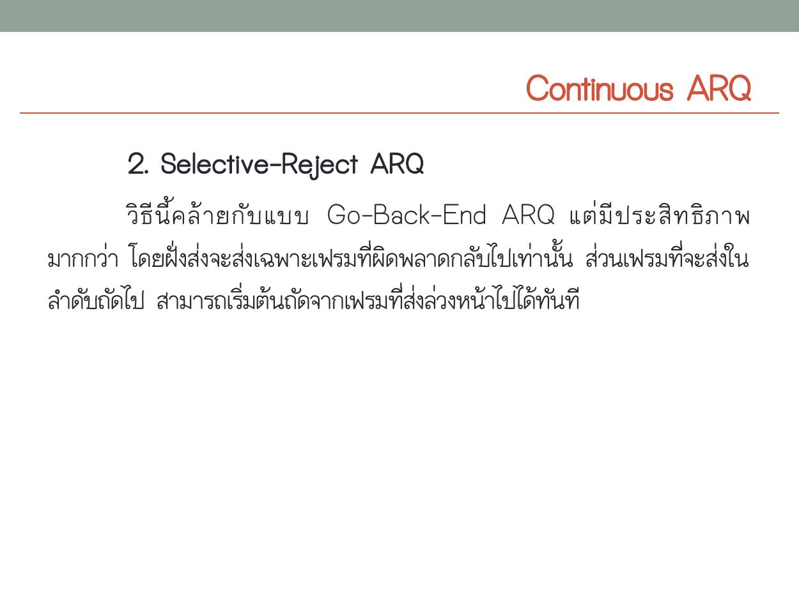
คลิกภาพเพื่อเปิดขยาย
อ่านข้อความต้นฉบับที่สกัดได้ (ไทย/อังกฤษตามไฟล์) Continuous ARQ
2. Selective-Reject ARQ
วิ ธี นี้ ค ล้ า ยกั บ แบบ Go-Back-End ARQ แต่ มี ป ระสิ ท ธิ ภ าพ
มากกว่า โดยฝั่งส่งจะส่งเฉพาะเฟรมที่ผิดพลาดกลับไปเท่านั้น ส่วนเฟรมที่จะส่งใน
ลาดับถัดไป สามารถเริ่มต้นถัดจากเฟรมที่ส่งล่วงหน้าไปได้ทันที ทบทวนภาษาไทย: การตรวจจับและแก้ไขข้อผิดพลาด Data Link Control และ Reliable Transfer
กลับสารบัญ ↑ หน้า 29 — Selective-Reject ARQ ดูภาพต้นฉบับหน้า 29 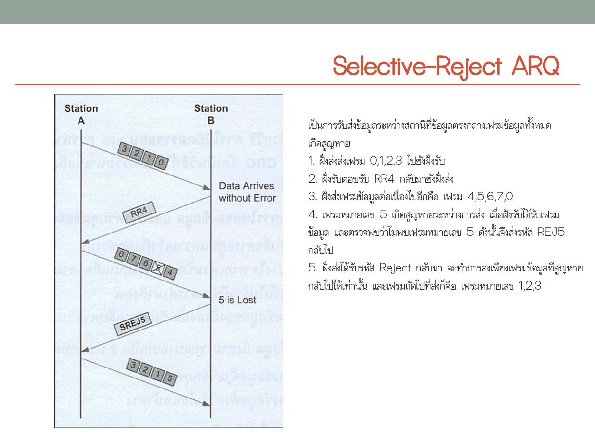
คลิกภาพเพื่อเปิดขยาย
อ่านข้อความต้นฉบับที่สกัดได้ (ไทย/อังกฤษตามไฟล์) Selective-Reject ARQ
เป็นการรับส่งข้อมูลระหว่างสถานีที่ข้อมูลตรงกลางเฟรมข้อมูลทั้งหมด
เกิดสูญหาย
1. ฝั่งส่งส่งเฟรม 0,1,2,3 ไปยังฝั่งรับ
2. ฝั่งรับตอบรับ RR4 กลับมายังฝั่งส่ง
3. ฝั่งส่งเฟรมข้อมูลต่อเนื่องไปอีกคือ เฟรม 4,5,6,7,0
4. เฟรมหมายเลข 5 เกิดสูญหายระหว่างการส่ง เมื่อฝั่งรับได้รับเฟรม
ข้อมูล และตรวจพบว่าไม่พบเฟรมหมายเลข 5 ดังนั้นจึงส่งรหัส REJ5
กลับไป
5. ฝั่งส่งได้รับรหัส Reject กลับมา จะทาการส่งเพียงเฟรมข้อมูลที่สูญหาย
กลับไปให้เท่านั้น และเฟรมถัดไปที่ส่งก็คือ เฟรมหมายเลข 1,2,3 ทบทวนภาษาไทย: การตรวจจับและแก้ไขข้อผิดพลาด Data Link Control และ Reliable Transfer
กลับสารบัญ ↑ หน้า 30 — Selective-Reject ARQ ดูภาพต้นฉบับหน้า 30 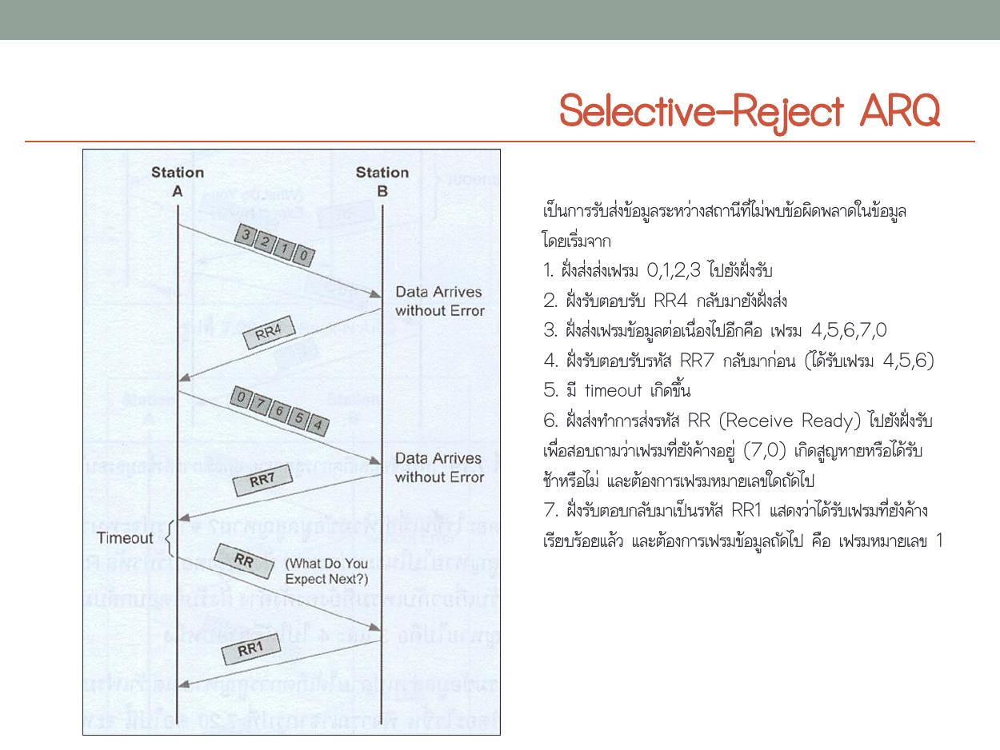
คลิกภาพเพื่อเปิดขยาย
อ่านข้อความต้นฉบับที่สกัดได้ (ไทย/อังกฤษตามไฟล์) Selective-Reject ARQ
เป็นการรับส่งข้อมูลระหว่างสถานีที่ไม่พบข้อผิดพลาดในข้อมูล
โดยเริ่มจาก
1. ฝั่งส่งส่งเฟรม 0,1,2,3 ไปยังฝั่งรับ
2. ฝั่งรับตอบรับ RR4 กลับมายังฝั่งส่ง
3. ฝั่งส่งเฟรมข้อมูลต่อเนื่องไปอีกคือ เฟรม 4,5,6,7,0
4. ฝั่งรับตอบรับรหัส RR7 กลับมาก่อน (ได้รับเฟรม 4,5,6)
5. มี timeout เกิดขึ้น
6. ฝั่งส่งทาการส่งรหัส RR (Receive Ready) ไปยังฝั่งรับ
เพื่อสอบถามว่าเฟรมที่ยังค้างอยู่ (7,0) เกิดสูญหายหรือได้รับ
ช้าหรือไม่ และต้องการเฟรมหมายเลขใดถัดไป
7. ฝั่งรับตอบกลับมาเป็นรหัส RR1 แสดงว่าได้รับเฟรมที่ยังค้าง
เรียบร้อยแล้ว และต้องการเฟรมข้อมูลถัดไป คือ เฟรมหมายเลข 1 ทบทวนภาษาไทย: การตรวจจับและแก้ไขข้อผิดพลาด Data Link Control และ Reliable Transfer
กลับสารบัญ ↑ หน้า 31 — Selective-Reject ARQ ดูภาพต้นฉบับหน้า 31 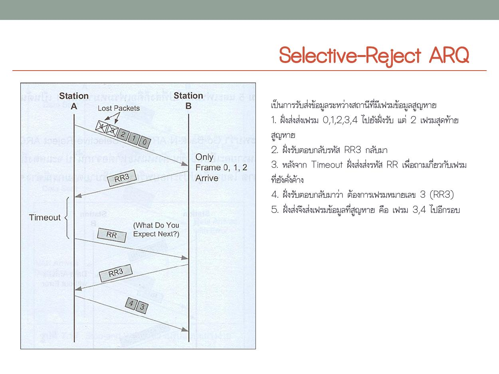
คลิกภาพเพื่อเปิดขยาย
อ่านข้อความต้นฉบับที่สกัดได้ (ไทย/อังกฤษตามไฟล์) Selective-Reject ARQ
เป็นการรับส่งข้อมูลระหว่างสถานีที่มีเฟรมข้อมูลสูญหาย
1. ฝั่งส่งส่งเฟรม 0,1,2,3,4 ไปยังฝั่งรับ แต่ 2 เฟรมสุดท้าย
สูญหาย
2. ฝั่งรับตอบกลับรหัส RR3 กลับมา
3. หลังจาก Timeout ฝั่งส่งส่งรหัส RR เพื่อถามเกี่ยวกับเฟรม
ที่ยังคั่งค้าง
4. ฝั่งรับตอบกลับมาว่า ต้องการเฟรมหมายเลข 3 (RR3)
5. ฝั่งส่งจึงส่งเฟรมข้อมูลที่สูญหาย คือ เฟรม 3,4 ไปอีกรอบ ทบทวนภาษาไทย: การตรวจจับและแก้ไขข้อผิดพลาด Data Link Control และ Reliable Transfer
กลับสารบัญ ↑